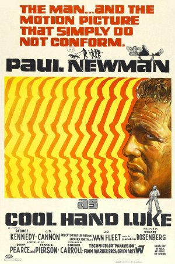
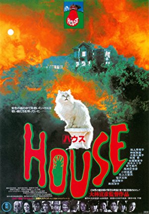
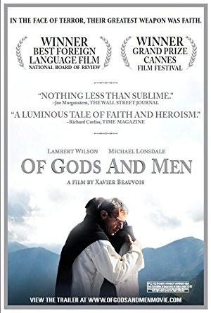
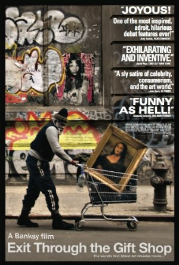
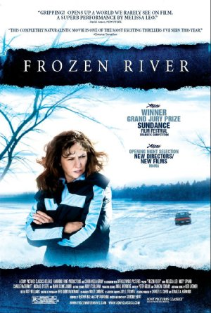
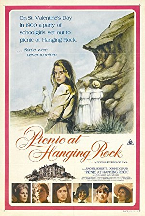
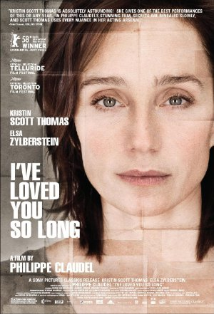
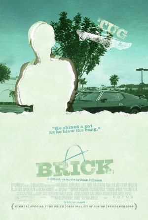
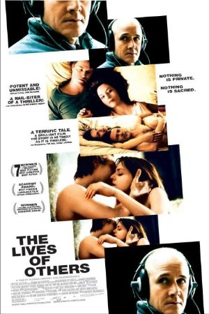
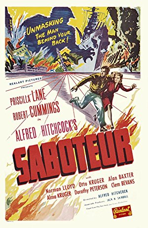

Season 48 (2013-2014)
-

September 8, 2013Directed by Stuart Rosenberg; Starring Paul Newman, George Kennedy, J.D. Cannon, Lou Antonio
Cool Hand Luke
USA, 1967, 126 min, Color, Not Rated
Cool Hand Luke uses a seemingly simple and straightforward story to offer a lot of social commentary. In the post-World War II South, Luke Jackson, a decorated veteran, finds himself bored with life. After a minor act of defiance, he ends up on a chain gang for two years. He soon earns the name Cool Hand Luke for his stubbornness and audaciousness. The prison bosses begin a systematic campaign to break him. Viewed purely on a narrative level, it is nothing more than the story of one man's prison odyssey. Taken to a deeper level, it is a metaphor for the social climate in which it germinated. The bittersweet payoff is successfully orchestrated.
Read Roger Ebert's review of Cool Hand Luke at Great Movies. -

October 13, 2013Directed by Nobuhiko Ôbayashi; Starring Kimiko Ikegami, Miki Jinbo, Kumiko Ohba, Ai Matsubara
House (Hausu)
Japan, 1977, 88 min, Color, Not Rated, Japanese w/subtitles
Horror films seem to be in a constant state of evolution. There's always a new twist on an old plot. The bare bones of the plot of Housesound familiar: a group of teenage girls trapped in a creepy old mansion are being murdered one by one. However, in the hands of a first-time director with a background in art and advertising, it becomes a chaotic and experimental piece of work. Angel, a Japanese schoolgirl and only child, finds out that her widowed father wants to bring his glamorous new girlfriend on their summer vacation. Furious, she decides to take a few classmates to her aunt's mansion in the country. Will the survivors discover the terrifying secret behind the house before it's too late?
-

November 10, 2013Directed by Xavier Beauvois; Starring Lambert Wilson, Michael Lonsdale, Olivier Rabourdin, Philippe Laudenbach
Of Gods and Men (Des hommes et des dieux)
France, 2010, 122 min, Color, PG-13, French w/subtitles
In 1966 Algeria, eight Trappist monks are taken hostage by terrorists. The Algerian government had urged the monks to leave. The monks could easily have avoided this fate, but instead chose to maintain their quiet routines: to pray and sing in a little chapel, tend crops, sell honey, treat the sick, and hold community meetings. They live peacefully in a Muslim community. There is deep serenity in their way of life. The film doesn't raise political questions. It focuses on the nobility of the monks in choosing to stay with their vocation and duty in the face of quite probably death. Did they make the right choice?
-

December 8, 2013Directed by Banksy; Starring Banksy, Mr. Brainwash, Debora Guetta, Space Invader
Exit Through the Gift Shop
UK, 2010, 87 min, Color, R
A Los Angeles-based Frenchman, Thierry Guetta, wants to film street artists in the process of creating their work. He tells them he is making a documentary, when in reality he has no intention of editing the footage into one cohesive movie. Unaware of this, many street artists from around the world agree to participate. One of the artists is the camera-shy Brit, Banksy, who refuses to be shown on screen unless he is blacked out. Banksy convinces Thierry to use the footage to make a movie, but then decides to make his own film about the project.
-

January 12, 2014Directed by Courtney Hunt; Starring Melissa Leo, Misty Upham, Charlie McDermott, Michael O'Keefe
Frozen River
USA, 2008, 97 min, Color, R
The film takes place in the days before Christmas near a little-known border crossing on the Mohawk reservation between New York and Quebec. The lure of fast money from smuggling presents a daily challenge to single mothers who would otherwise be earning minimum wage. Two women – one white, one Mohawk, both faced with desperate circumstances – are drawn into the world of smuggling aliens across the frozen St. Lawrence River. This is the story of two lives in economic emergency, of two women who are brace and resourceful, and the awesome, terrifying beauty in their journeys across the ice.
-

February 9, 2014Directed by Peter Weir; Starring Rachel Roberts, Vivean Gray, Helen Morse, Kirsty Child
Picnic at Hanging Rock
Australia, 1975, 115 min, Color, PG
On a drowsy Valentine's Day in 1900, a party of girls from a strict boarding school in Australia go on a day's outing to Hanging Rock, a geological outcropping not far from their school. Three of the girls and one of their teachers disappear into thin air. One of them is found a week or so later, but can remember almost nothing. Where are the others and will they be found? A film of haunting mystery and buried sexual hysteria, Picnic explores the chasm between settlers from Europe and the ancient mysteries of their new home.
Read Roger Ebert's review of Picnic at Hanging Rock at Great Movies. -
March 9, 2014Directed by Pedro Almodóvar; Starring Penélope Cruz, Lluís Homar, Blanca Portillo, José Luis Gómez
Broken Embraces (Los abrazos rotos)
Spain, 2009, 127 min, Color, R, Spanish w/subtitles
In this compulsive psychological thriller, Penelope Cruz plays a woman loved and obsessed over, feared, and abused. It is a movie crammed with passion, plot twists, and lies. Every other character clutches a painful past or shameful secret. At the start of the film, the protagonist introduces himself as two people: a sighted film director and a blind screenwriter. How the carefree film director morphed into the disabled screenwriter is the crux of the story that leaps between two time periods and multiple layers of deception.
-

April 13, 2014Directed by Philippe Claudel; Starring Kristin Scott Thomas, Elsa Zylberstein, Serge Hazanavicius, Laurent Grévill
I've Loved You So Long (Il y a longtemps que je t'aime)
France/Germany, 2008, 117 min, Color, PG-13, French w/subtitles
Thomas has specialized in playing women whose cool facade covers strong emotion. Here she's covering a volcano she can never completely hide. Initially Juliette is seen waiting to be picked up at the airport. We learn she has just been released after 15 years in prison. Her younger sister brings her home to stay with her family. Overall Juliette harbors the hopelessness of someone who knows she can never really be understood and fears she may never be part of the world again. She's in constant conflict. How she resolves the conflict is the essence of the film, along with the film's essential mystery: Why was Juliette imprisoned?
-
May 11, 2014Directed by Carlos Saura; Starring Antonio Gades, Cristina Hoyos, Laura del Sol, Juan Antonio Jiménez
El Amor Brujo
Spain, 1986, 100 min, Color, PG, Spanish w/subtitles
Like the dance and emotions that inspired it, El Amor Brujo is unrepentantly and passionately theatrical. Skies are not just blue, but purple; sunsets glow vivid pink; bonfires rage blood red. Created by one of the leading visual stylists of dance on film, Carlos Saura, the film explores the gypsy origin of flamenco. Set in a dusty Andalusian village, it is a tale of a woman possessed by the ghost of her unfaithful husband and the man who loves her.
-

June 8, 2014Directed by Rian Johnson; Starring Joseph Gordon-Levitt, Nora Zehetner, Lukas Haas, Noah Fleiss
Brick
USA, 2005, 110 min, Color, R
High school student Brendan finds the dead body of his one-time girlfriend Emily in a drainage ditch. From the mouth of the tunnel comes the sound of her murderer escaping. The victim called him earlier for help. Brendan turns into a classic 1930s gumshoe, tracing her movements back to a high school principal who tries to pull him off the case. True to the genre, the movie has tough and dippy dames, an eccentric crime kingpin, some would-be toughs, and an enigmatic know-it-all. It's a classic Hollywood film noir!
-

July 13, 2014Directed by Florian Henckel von Donnersmarck; Starring Martina Gedeck, Ulrich Mühe, Sebastian Koch, Ulrich Tukur
The Lives of Others (Das Leben der Anderen)
Germany, 2006, 137 min, Color, R, German w/subtitles
In 1984 East Berlin, an agent of the secret police, conducting surveillance on a writer and his lover, finds himself becoming increasingly absorbed in their lives. He sits in an attic day after day, night after night, spying on the people in the flat below. That angle in itself is unusual: a thriller that follows the villain. This film shows both the right ways and wrong ways to live. Most compelling, it puts a man who has lived his life in a desperately wrong way, as a tormenter of innocents and a government thug, listening to the conversations of a thoroughly decent man.
-

August 10, 2014Directed by Alfred Hitchcock; Starring Priscilla Lane, Robert Cummings, Otto Kruger, Alan Baxter
Saboteur
USA, 1942, 109 min, B&W, PG
After a fire at a Los Angeles aircraft factory, Barry Kane is the number one suspect. Forced to go on the run to clear his name and find the man who is the real saboteur, he travels across the country to New York. Barry finds himself in the company of model Pat Martin who initially wants to turn him in, but slowly believes he is innocent, especially when they discover a fascist group is behind the factory fire and plans additional sabotage. The couple become entangled in a series of difficult situations, including catching a ride with quirky group of circus performers.